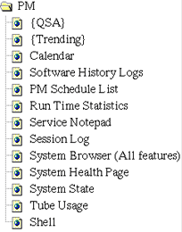

Proprietary to General Electric
Direction 5114045-800, Rev# 10
LightSpeed 4.X Service Information (Advanced)
Proprietary to General Electric |
Illustration 1: PM Icon
Illustration 2: PM Menu (Advanced)

Use the PM menu to access the following tools and diagnostics:
Not supported at this time.
Not supported at this time.
Displays the current month’s calendar. (This is a perpetual calendar.)
Shows the historical information for system operations such as calibration, tube alignments, generator calibration, image analysis, diagnostic tools, collimator tests, and DAS tools. This tool allows the field engineer to view when each operation has been performed, and the resultant data/status from each operation.
Presents a visual checkout of completed PM items and access to PM activities. They are listed under the categories Console/Computer, Gantry, HV, Tube, Hardkey/Keyboard, System, and Images. System State and Storelog are two activities that are offered here too.
Shows key system statistics, such as tube spits, rotor up-time, and various system temperature readings. This tool allows the Field Service or OLC Engineer to save this information into a text file for retrieval via InSite.
Use this to create a message for GE InSite and other Field Engineers. It appears on the Health page.
Displays Field Engineer comments, InSite comments, Tool and Diagnostic Start Messages, and what images InSite has reviewed. Also can be used to create a message for GE InSite and other Field Engineers. It appears on the Health page.
Refer to “Log Viewer,” on page 95 for a complete description of the Log Viewer.
Summarizes several key system performance parameters. Presents service notes from the user, other FE’s or InSite. Can be configured to show any or all of these items.
Use this utility to save or restore configuration, characterization, calibration and protocol files. Use it with a system formatted (mkfsMOD) MOD during system reconfiguration or software load.
Use this utility to view information about the current x-ray tube and all previously installed tubes.
Presents a window that enables you to enter IRIX and UNIX commands, start scrips that perform a series of commands, or start programs. Press <ALT>-<F12> to exit the shell when it is no longer needed.